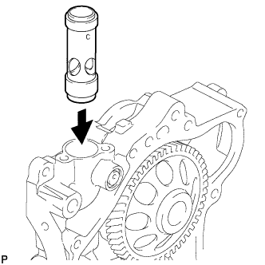
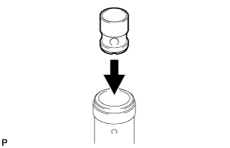
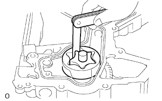
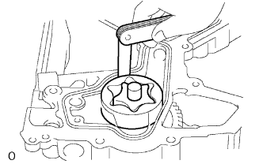
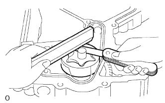

МАСЛЯНЫЙ НАСОС (для моделей с DPF) > ПРОВЕРКА |
| 1. ПРОВЕРЬТЕ МУФТУ ПЕРЕПУСКНОГО КЛАПАНА МАСЛЯНОГО НАСОСА |
|  |
Нанесите на муфту перепускного клапана масляного насоса слой моторного масла.
Вставьте муфту перепускного клапана масляного насоса в картер газораспределительного механизма и убедитесь, что она свободно опускается под действием собственного веса.
Если результат проверки не отвечает требованиям, замените муфту перепускного клапана масляного насоса. При необходимости замените картер газораспределительного механизма в сборе.
| 2. ПРОВЕРЬТЕ ПЕРЕПУСКНОЙ КЛАПАН МАСЛЯНОГО НАСОСА |
|  |
Нанесите на перепускной клапан масляного насоса слой моторного масла.
Вставьте перепускной клапан масляного насоса в картер газораспределительного механизма и убедитесь, что он свободно опускается под действием собственного веса.
Если результат проверки не отвечает требованиям, замените перепускной клапан масляного насоса. При необходимости замените муфту перепускного клапана масляного насоса.
| 3. ПРОВЕРЬТЕ МАСЛЯНЫЙ НАСОС |
 |
Установите ведомую шестерню в картер газораспределительного механизма таким образом, чтобы метка была направлена к блоку цилиндров.
|  |
Проверьте зазор между вершинами зубьев шестерен.
С помощью комплекта плоских щупов измерьте зазор между вершинами зубьев ведущей и ведомой шестерен.
|  |
Проверьте зазор между шестерней и корпусом.
С помощью комплекта плоских щупов измерьте зазор между ведомой шестерней и корпусом масляного насоса.
|  |
Проверьте боковой зазор.
С помощью комплекта плоских щупов и прецизионной поверочной линейки измерьте зазор между шестерней и прецизионной поверочной линейкой.